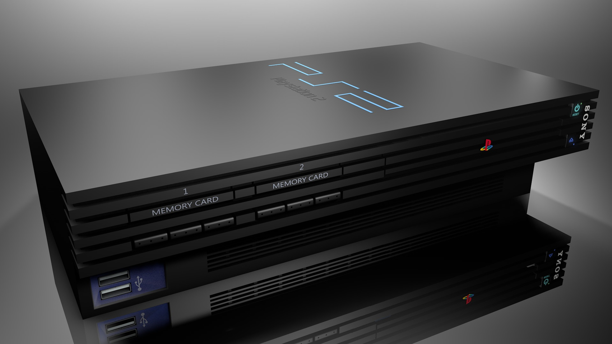
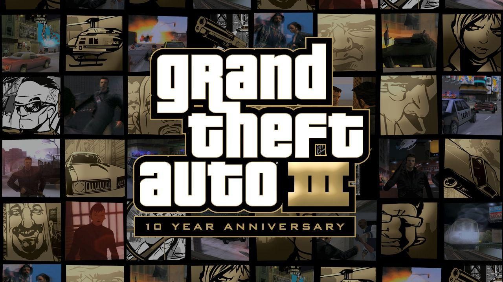
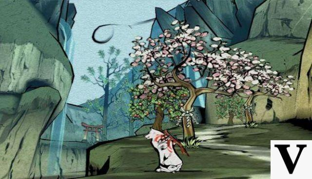
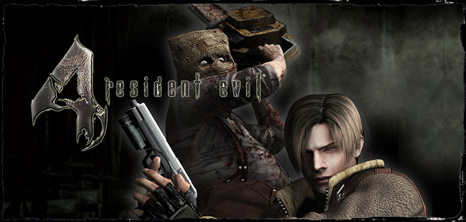
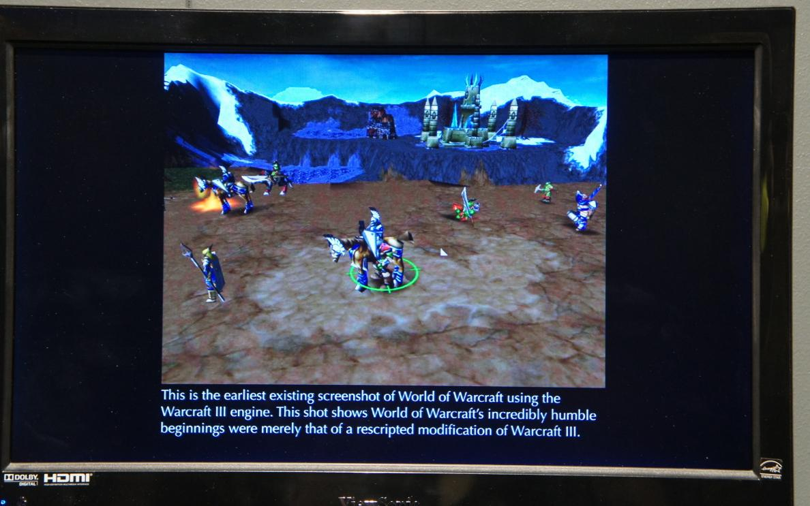

Hace 20 años de aquel 2000, año en el que las máquinas se tenían que desbaratar
y empezar a masacrar gente poseidas por Skynet. No pasó nada de nada, y a día de
hoy estamos más o menos bien dentro de lo que cabe.
Diez años que han dado muchas noticias, videoconsolas y videojuegos…muchos videojuegos
dignos de recordar y otros que mejor se hubieran quedado en la mente poco creativa de su creador.

LISTA DE JUEGOS:
GTA III (Playstation 2 – PC) El paso a las 3D de la saga Grand Theft Auto nos dejó a todos con la boca abierta. Con GTA III
alucinamos y sentó las bases para los próximos GTA, incluso Red Dead Redemption, es por eso que debe
de ser jugado si o si. Sus hermanos más mayores, GTA Vice City, San Andreas y GTA IV (para Playstation
3, XBox 360 y PC) tampoco se quedan atrás y son grandes juegos.

OKAMI (Playstation 2 – Wii) Okami cautivó a la crítica pero no tuvo las ventas deseadas. Clover
Studios hacía juegos de este tipo Siempre tenían a favor los análisis y muy buena crítica, pero las ventas nunca acompañaban. Además, para
nuestra desgracia, Okami no llegó ni traducido ni doblado al castellano, cosa que hizo que mucha gente no
se pillara el juego. De poco sirvieron las plataformas para recoger firmas.
A todo eso, Okami es un gran juego y muy original. Gráficos Cel, una loba como protagonista que trata de
salvar el mundo pintando con un pincel…Un juego muy al estilo Clover Studios que gusta a mucha gente.

Resident Evil 4 (Gamecube – Playstation 2 – Wii) Esta saga antes si que daba miedo y bastante canguelo, cosa que ahora no ocurre. Resident Evil 4 nos tranportaba
a un pueblo de un país no muy conocido donde hablan raro y donde un tipo con motosierra daba bastante miedo.
Al principio solo tenía que estar en el catálogo de Gamecube, pero vistas las ventas del videojuego de Capcom
en la sobremesa de Nintendo, esta se pasó por el forro el contrato de exclusividad y lanzó Resident Evil 4 también
para Playstation 2 y además con alguna novedad. Más tarde el juego saldría para Wii.

World of Warcraft (PC) Es la droga hecha videojuego. Un mundo que no tiene fin y que mucha gente está enganchada. Es común ver noticias
sobre este juego del tipo: Un jóven se pasa «X» expansión en menos de 24 horas. Un jugador de WoW se casa con su personaje.
El mundo de World of Warcraft atrapa a todo aquel que tenga el valor de jugar unos pocos minutos. El juego por excelencia de PC.

Uncharted 2 (Playstation 3)
¿Quién dijo que segundas partes nunca fueron buenas? Eso es que no conoce Uncharted 2. El primer Uncharted
para PS3 ya apuntaba
alto y era un juego a tener en cuenta en el catálogo de Playstation 3, pero es que lo de Uncharted 2 fué brutal. Mejoraba en todos
sus aspectos a la primera entrega y hay que ver las notas que se llevó en muchas webs de videojuegos.
Ahora, la gente espera con ganas Uncharted 3: Drake’s Deception…¿Será capaz de superar Uncharted 2? Lo tiene bastante difícil.